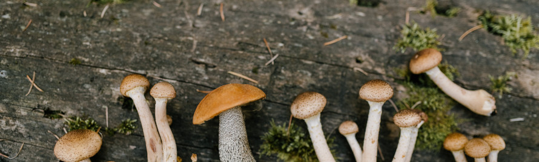
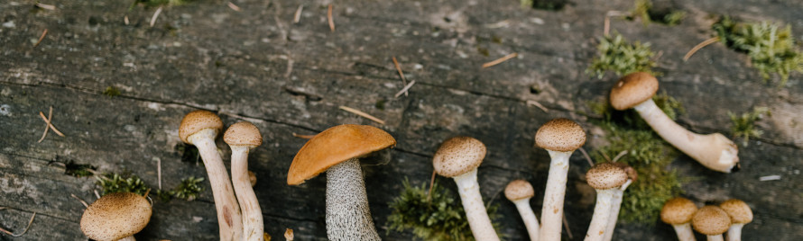

Winter
December

Januari

Februari
Mijn biotoop
Ik woon op aardegrond, de grond in mijn tuin is vruchtbaar en er kunnen veel planten leven. De grond in mijn tuin is vochtig genoeg en wij hoeven alleen te sproei in de zomer. De tuin is ook goed verlicht door de zon, er staat niets in de weg voor de zon om bij de planten en boom te komen. De temperatuur is door de zon soms ook best hoog omdat de zon er goed bij kan.
Invloed van de mens
Mijn 4m2 was vroeger best wel zelf voorziend, de laatste tijd is dat minder door de opwarming van de aarde hierdoor moeten wij regelmatig sproeien in de tuin. Soms strooien wij ook wat mest over de planten zodat het beter groeit en het mooier wordt.
Hoe kan ik de organismen helpen
Als eerst kan ik een vogelhuisje en een huisje voor eten voor de eekhoorns neerzetten. (Bovenste vogelhuisje en onderste eekhoorn voer)

Ik kan ook eten voor de vogels neerzetten in de winter zodat ze meer eten hebben.

Hoe overleven mijn 10 organismen in de winter
planten
Hortensia
Een hortensia kan op zichzelf al goed overleven in de winter. Mijn hortensia is nog jong dus er moet een klein beetje beschutting zijn. Dit hebben wij door de schuur en de bomen al, dus daar hoefden wij niks aan te doen.
Callicarpa
Een callicarpa leeft van de bessen van zichzelf. Je moet de plant soms wel snoeien zodat het niet te groot wordt. Soms moet er ook wat kunstmest en turf toegevoegd worden zodat het groeit en zodat het bessen blijft aanmaken.
Wijnstok
De wijnstok slaapt eigenlijk alleen in de winter. Het is best raar maar het is zelfs dat het beter voor de plant is als het kouder is voor de plant en het sap in de plant.

Suikeresdoorn
De suikeresdoorn haalt water uit de bodem van de grond en heeft meestal veel water nodig om te overleven. In de winter is het vaak vochtig en hoeft de boom niet veel te doen om te overleven.
Liguster
Een liguster heeft niet veel nodig om de winter te overleven. De liguster kan net als de suikeresdoorn makkelijk aan water komen in de grond daardoor hoeft het ook niet veel te doen in de winter om te overleven.

Dieren
Slak
In het najaar over winteren ze onder bladeren of in de grond om zo de warm te blijven. In winters waar het echt heel koud wordt heb je nog kans dat de slak het niet overleeft. Als het weer warmer wordt worden de slakken weer wakker en gaan ze gelijk hun water verlies weer verminderen.
Lieveheersbeestje
De lieveheersbeestjes blijven het liefst in de winter in kleine kieren of openingen in bijvoorbeeld je huis of in een boom zitten. Ze blijven daar warm en eten in het najaar eerst heel veel zodat ze niet hoeven te eten in de winter.

Spreeuw
Spreeuwen nestelen in bomen vogelhuisjes of zelfs gebouwen. Ze eten van tevoren heel veel insectenlarven en landpootmuggen zodat ze voldoende eten hebben. Na de broedtijd verzamelen ze zich in grote slaapplaatsen
Egel
Egels houden hun winterslaap in een winternest, dat wordt gemaakt van droge bladeren. Meestal doen ze dit onder een heg, een stapel houtblokken of bijvoorbeeld onder een schuurtje. Het is niet zo dat egels aaneengesloten slapen. Soms worden ze wakker en veranderen zelfs van nest.

Pissebed
Zolang het niet vriest proberen pissebedden zo veel mogelijk actief te blijven omdat ze een kreeft soort zijn en dus gevoelig voor de kou. Ze gaan meestal met veel pissebedden opzoek naar voedsel.

Producenten, Consumenten en Reducenten.
Producenten
Hydrangea quercifolia

plant met paarse besjes is callicarpa
Hydrangea quercifolia. plant met paarse besjes is callicarpa.
Consumenten
Lieveheersbeestje
Pissebed

Reducenten
Ik kon geen makkelijke foto’s maken over reducenten omdat er niet veel doden dieren in mijn tuin liggen. Ik weet wel dat er soms doden muizen liggen omdat mijn kat daarmee speelt en op jaagt. De afval eters eten die dan op en dan hebben de reducenten ook weer wat te eten.
Koolstof kringloop

lente
.
...
...
zomer
..
...
...
herfst
..
..
..
de aanpak
..
...
..